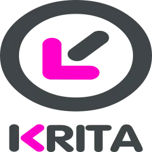
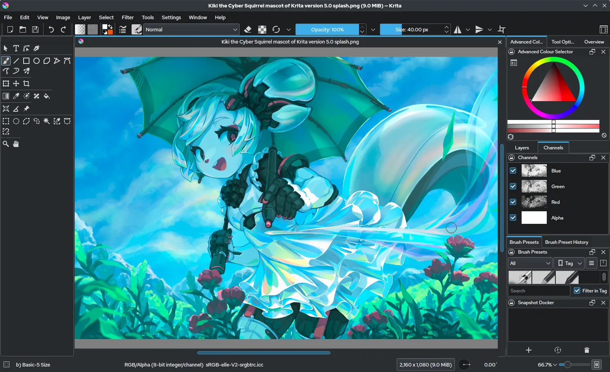
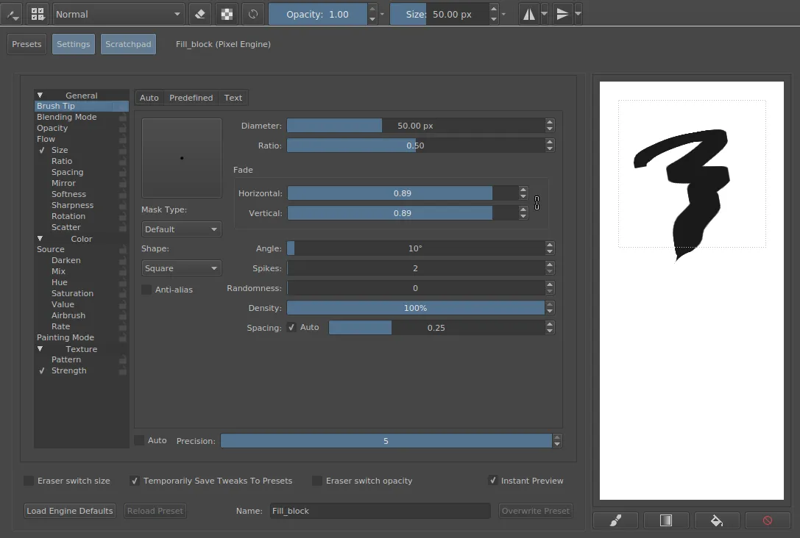
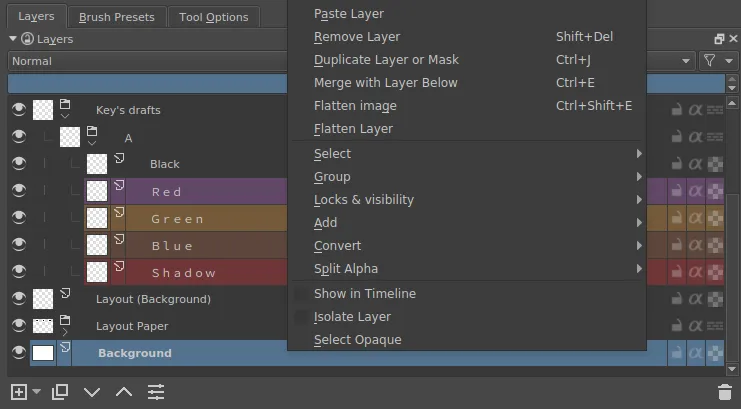
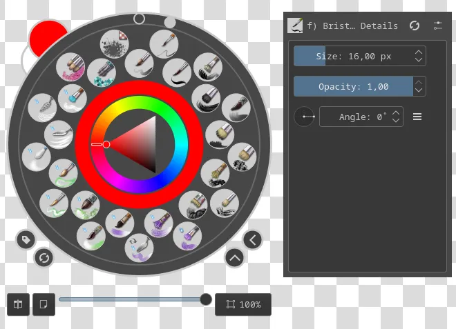

كريتا Krita – برنامج الرسم الرقمي الاحترافي
→ العودة للمصدر المفتوحبرنامج رسم رقمي مجاني ومفتوح المصدر بقدرات إبداعية لا حدود لها


الصورة: ويكيميديا كومنز (رخصة GPL)
نظرة عامة
كريتا هو برنامج رسم رقمي احترافي مفتوح المصدر، صُمم خصيصًا لتلبية احتياجات الفنانين الرقميين ورسامي الكوميكس والمصممين. يتميز بواجهة مستخدم بديهية ومرنة وقائمة ضخمة من الفرش الاحترافية التي تحاكي أدوات الرسم التقليدية مثل الأقلام الرصاص وأقلام الحبر والألوان المائية والزيتية.
منذ إطلاقه الأول في عام 2005، تطور كريتا ليصبح واحدًا من أقوى بدائل برامج الرسم المدفوعة مثل Adobe Photoshop وCorel Painter. يدعم البرنامج العمل على الطبقات (Layers) وأقنعة الطبقات (Masks) وأنماط المزج المختلفة، مما يمنح الفنان تحكمًا كاملاً في كل تفصيلة من تفاصيل العمل الفني.
يعمل كريتا على أنظمة ويندوز وماك ولينكس، وهو متوفر بأكثر من 30 لغة حول العالم. البرنامج مجاني بالكامل ولا يحتوي على أي إعلانات أو اشتراكات، مما يجعله خيارًا مثاليًا للفنانين من جميع المستويات سواء كانوا مبتدئين أو محترفين.
المميزات الرئيسية
- محرك فرش متطور مع أكثر من 100 فرشة افتراضية قابلة للتخصيص بالكامل، مع القدرة على إنشاء فرش جديدة باستخدام محرك الفرش المتقدم.
- دعم كامل للطبقات والأقنعة وأنماط المزج مع إمكانية تنظيم الطبقات في مجموعات واستخدام الطبقات التكيفية (Filter Layers).
- أدوات رسم متجهة (Vector Tools) متكاملة للرسوميات والخطوط والنصوص مع دعم منحنيات بيزير.
- محرك رسوم متحركة مدمج يسمح بإنشاء إطارات مفتاحية (Keyframes) ورسوم متحركة ثنائية الأبعاد بسهولة.

الصورة: ويكيميديا كومنز (رخصة GPL)

الصورة: ويكيميديا كومنز (رخصة GPL)
لماذا تختار كريتا؟
يتميز كريتا بكونه برنامجًا مجانيًا بالكامل دون أي تنازل عن الجودة أو الأداء. يستخدمه الآلاف من الفنانين المحترفين حول العالم في إنتاج أعمال فنية مذهلة. مجتمع كريتا نشط ومتعاون، وهناك عدد هائل من الدروس التعليمية والموارد المجانية على الإنترنت لمساعدتك على البدء وتطوير مهاراتك.

الصورة: ويكيميديا كومنز (رخصة GPL)
على عكس البرامج التجارية، لا يطلب منك كريتا دفع اشتراك شهري للوصول إلى جميع المميزات. كل ما يقدمه البرنامج متاح لك بشكل كامل منذ اللحظة الأولى لتحميله، وهذا يشمل جميع التحديثات المستقبلية أيضًا.
ابدأ الآن
قم بزيارة الموقع الرسمي: krita.org
كريتا هو برنامج مجاني ومفتوح المصدر بالكامل. لا اشتراكات ولا تكاليف خفية.